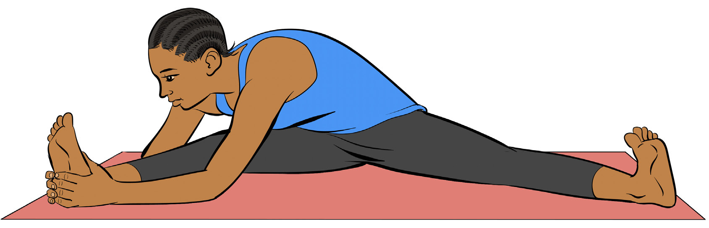

Perform a standing quad stretch by following proper procedures.
Question:
Why do we need to stand supported by touching a wall or holding a chair when performing standing quad stretch?
Seat side straddle
The following steps show how to perform seat side straddle exercise:
(i) Sit with legs spread, placing both hands on the same shin or ankle;
(ii) Bring the chin toward the knee, keeping the leg straight;
(iii) Hold on the same pause for at least five seconds;
(iv) Do the same exercise on the other leg; and
(v) Repeat for at least three to six times.

Figure 3.7: Seat side straddle exercise